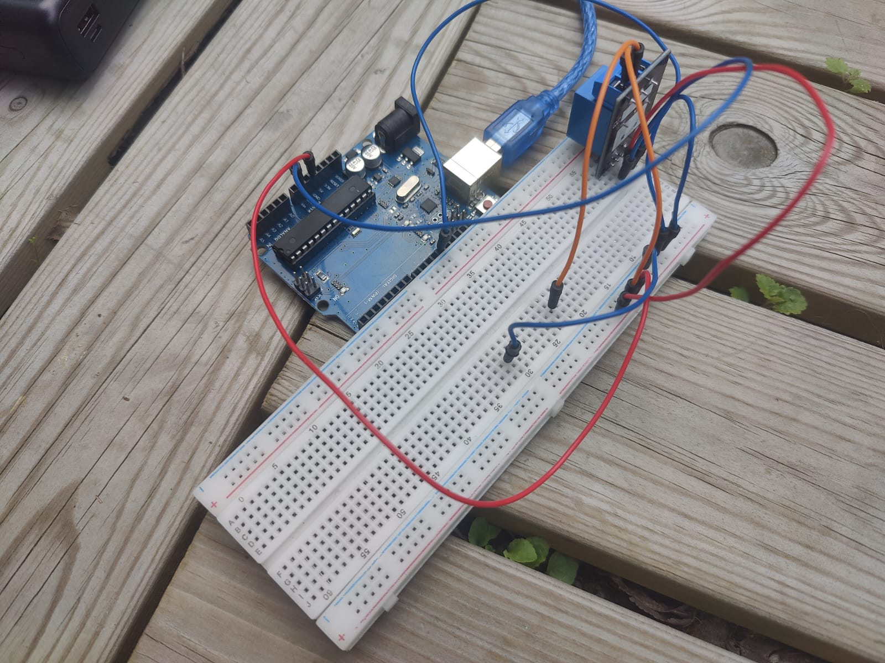
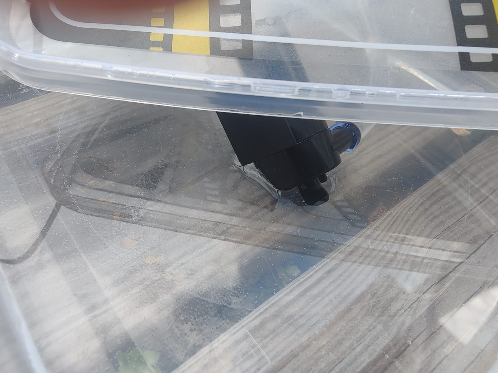
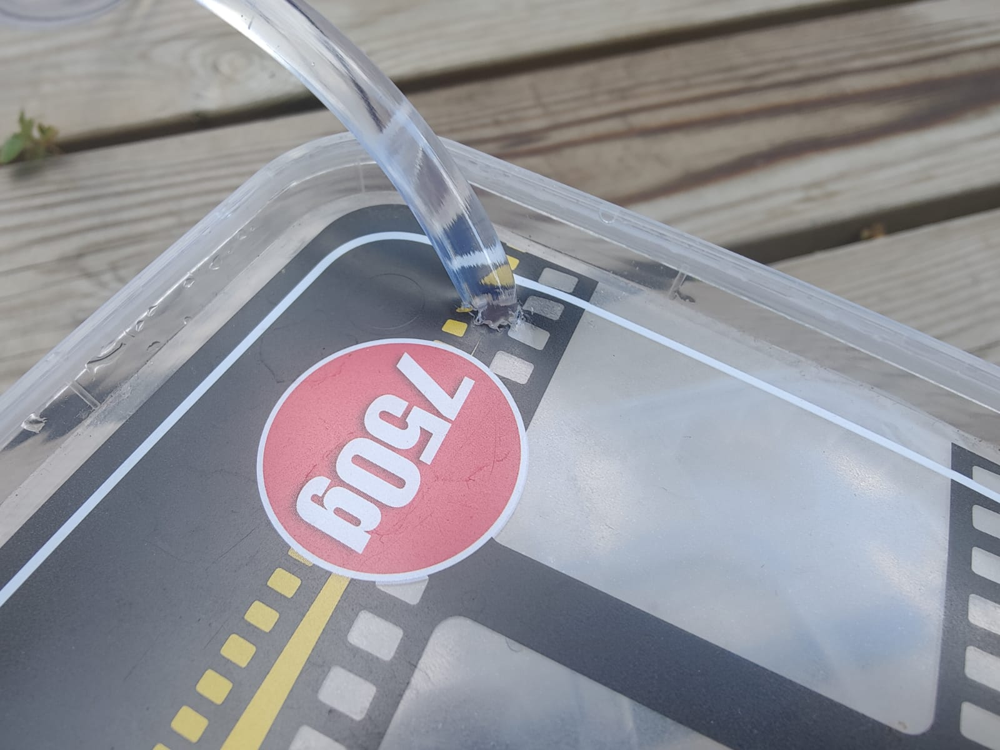
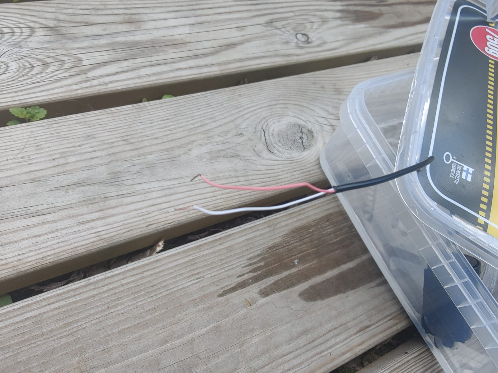

Wiring with breadboard.
This image shows the wiring required for the system to function. In real use cases, the wires would need to be soldered for reliability, but a breadboard is better for demonstration purposes. The components needed are an Arduino Uno board, a 230 V relay, wires, and a breadboard. Additional equipment includes a submersible water pump, garden hose, USB cable, power source, and a computer for uploading the code to the microcontroller.
Watering demonstration.
This video shows how the pump periodically waters the plants. In this example, the time interval between waterings is only 8 seconds to showcase the effect. However, the interval can be set to anything from days to weeks. This is enabled by an Arduino library that puts the board into an ultra-low-power state for a specified duration. This allows the system to function for long periods without needing new batteries or solar panels.
The pump used in this demonstration is very weak, as its maximum voltage is only 5 V. I bought it mainly to test the basic functionality of the system.
Functioning of the relay.
This video shows the relay in action—the red light turns on when the pump is powered. Using a relay is necessary because the Arduino’s input pins can only supply weak currents and voltages, which are insufficient to power a pump. The relay acts as an isolated, higher-power switch that can safely power devices connected to it. The Arduino board and its pins only control the relay.
The relay I used can theoretically sustain up to 230 V. I found it fascinating to control genuinely useful hardware with just an Arduino Uno board. I could connect a more powerful pump to the same system, and it would work the same way, just with more water pressure.

Pump and water container.
The board needs to remain protected from water while still being connected to the pump. I made a small hole in this plastic container and stripped the pump’s wires so they could reach the board more easily. The board itself is kept in another plastic container—also with a tight hole for the wires—to prevent rainwater from making contact with the electronics.

Prototype garden setup showing hose layout for automatic irrigation in compact environment.

Relay and board housed together for safe operation; wiring optimized for reliability.

Final prototype phase — board enters sleep mode between activations to reduce power consumption close to zero, suitable for week-long cycles.